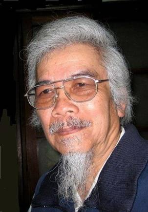
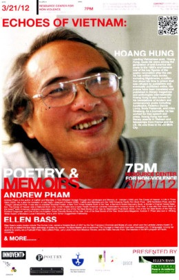

Đầu năm 1988 tôi vô tình được đọc tiểu luận Dắt tay nhau đi dưới tấm biển chỉ đường của trí tuệ ký tên Hà Sĩ Phu. Từ đó đến nay vừa đúng một phần tư thế kỷ (1988-2013). Vậy mà tôi còn nhớ rõ nội dung của nó. Có những chi tiết rất bất ngờ, chỉ đọc một lần là nhớ mãi. Để chứng minh càng có học vấn cao thì càng xa Đảng, càng ít học càng dễ gần Đảng, ông nêu ví dụ: Hai anh em ruột cùng cha mẹ sinh ra, thằng anh được đi học Liên Xô, đậu phó tiến sĩ, khi về nước phấn đấu mãi vẫn không được vào Đảng. Trong khi đó, thằng em ở nhà đi cày, vào Đảng rất dễ dàng…

Càng đọc tôi càng muốn gặp tác giả để xem con người này mồm ngang mũi dọc ra sao? Vài tháng sau, tôi theo một đoàn tham quan du lịch Đà Lạt do công ty chăn nuôi tỉnh Tiền Giang tổ chức. Công ty này làm ăn khá giả, muốn chứng minh tính ưu việt của chủ nghĩa xã hội nên tổ chức cho công nhân chăn heo của mình đi du lịch. Dĩ nhiên một nhà báo của trung ương thường trú tại đồng bằng như tôi xin đi theo thì ông giám đốc đồng ý ngày.
Đó là lần đầu tiên tôi đặt chân đến Đà Lạt. Thích thú vô cùng. Khí hậu mát lạnh, thiên nhiên diễm lệ. Làm một ngôi nhà trên đồi cao ở đây, ra sau nhà mở cửa nhìn ra thì thấy lẽ ra mặt tiền phải quay ra đằng sau mới phải, nhưng nếu mở cửa sổ bên hông thì lại thấy mặt tiền phải quay hướng đó mới đúng. Vì thế, sau này tôi đã viết bài Thành phố bốn mặt tiền để nói về Đà Lạt. Nhưng lần đầu tiên này, không phải tôi lên Đà Lạt để thưởng ngoạn thiên nhiên, mà để thưởng ngoạn một con người. Đó là một người đàn ông thấp, tướng ngũ đoản. Những người tướng ngũ đoản các cụ ta ngày xưa cho rằng thường là người tài. Mà có khi thế thật: Napôlêông, Lênin, Đặng Tiểu Bình, Nguyên Ngọc, Hà Sĩ Phu… đều tướng ngũ đoản.
Hà Sĩ Phu tên thật là Nguyễn Xuân Tụ, sinh ngày 22/4/1940 tại thôn Lạc Thổ, xã Đông Hồ, huyện Thuận Thành, tỉnh Bắc Ninh, quê hương của tranh Đông Hồ. Đậu phó tiến sĩ ở Tiệp Khắc năm 1982, về nước ông làm viện phó phân viện Đà Lạt của Viện Khoa học Việt Nam, về hưu năm 1993.
Vợ chồng anh Tụ có một cái quán nhỏ dựng ngay trước nhà bán các thứ lặt vật, mì gói, nước ngọt, bánh kẹo, v.v… Cái quán làm bằng các mảnh gỗ chắp vá. Cái hình tôi chụp anh trong quán gỗ ấy anh còn giữ đến bây giờ. Nếu đem cái hình đó ra hỏi thì ít ai nhận ra trong đó là ông già Hà Sĩ Phu râu dài, tóc bạc trắng như hôm nay.
Từ đó, mỗi lần có dịp lên Đà Lạt, tôi đều ghé thăm vợ chồng anh ở số bốn Bùi Thị Xuân. Nhưng buổi đầu gặp gỡ thì không bao giờ quên. Chúng tôi đã ngồi cả buổi trong cái quán gỗ ấy đàm đạo việc đời. Tôi nhận ra anh Tụ là người sắc bén trong tư duy nhưng tính cách hiền hậu, ôn hòa, rất dễ gần, dễ mến. Không ai có thể ghét một con người như thế. Vậy mà…
Sau này anh viết tiếp các bài như Đôi điều suy nghĩ của một công dân (1993), Chia tay ý thức hệ (1995), viết thư cho nhiều nhân vật nổi tiếng thì tôi thực sự lo lắng cho anh. Tư duy của anh đi đến cùng. Không khoan nhượng. Trong bài Chia tay ý thức hệ, anh ví chủ nghĩa Mác-Lênin như một con thuyền đã giúp những người Cộng sản giành được độc lập, giành được chính quyền. Nay có chính quyền rồi thì sau khi qua sông, lạy tạ con thuyền đó để đi tiếp, ai lại vác con thuyền trên đầu để đi bao giờ? Anh cho rằng, khi chưa có chính quyền, người cộng sản rước chủ nghĩa Mác vào cửa sau, nay có chính quyền rồi lại treo Mác ở trước cửa nhà để treo đầu dê bán thịt chó, thì đó là thái độ lấy oán báo ơn!
Ở một bài khác, anh ví chế độ độc đảng như con vật đơn bào, nó có thể tồn tại từ thời hồng hoang của lịch sử đến ngày nay, nhưng chỉ tồn tại trong cống rãnh mà thôi. Muốn nên người, nó phải là con vật đa bào.
Với tư duy và ngôn luận như thế, năm 1996 anh đã phải lãnh án tù một năm.
Anh kể với tôi: Một hôm ở trong tù, tôi bảo người sĩ quan an ninh: Tôi nghĩ kỹ rồi, Đảng ta rất sáng suốt. Người sĩ quan mừng lắm, lấy giấy bút ra làm việc để nghe tôi phân tích. Tôi nói: Quần chúng thì dốt nát, trí thức thì ươn hèn, Đảng cai trị đất nước bằng roi vọt là đúng lắm! Là thông minh lắm!
Tôi hỏi: Lúc ở tù họ có đánh anh không? Trả lời: Đối xử tử tế.
Khi anh Tụ ra tù, về đến sân bay Tân Sơn Nhất, còn ở lại khách sạn trong sân bay, nhà thơ Hoàng Hưng cho tôi hay, còn cho cả số điện thoại khách sạn anh ở. Tôi gọi điện thoại vô khách sạn, giọng một người đàn ông ở đầu dây đằng kia hỏi: Muốn gặp ai? Tôi trả lời: gặp phó tiến sĩ Nguyễn Xuân Tụ, bạn tôi. Hỏi: Để làm gì? Trả lời: Để mời anh ấy về nhà tôi ở gần sân bay, khi nào khỏe thì về Đà Lạt! Lúc sau, ở đầu dây đằng kia giọng anh Tụ vui vẻ. Anh cảm ơn tôi và bảo: Phải về Đà Lạt ngày, nhớ nhà, nhớ vợ lắm!
Tôi biết thừa lời mời của tôi là vô duyên và chẳng bao giờ anh Tụ nán lại Sài Gòn trong một hoàn cảnh như thế. Nhưng tôi muốn cho người ta thấy rằng một người như Hà Sĩ Phu thì không bao giờ cô đơn. Anh vẫn có bạn bè ở khắp nơi. Ít nhất là một người bạn như tôi.
Sau ngày ông đi tù về, ông còn chịu nhiều sức ép. Có lần người ta còn bày trò cho hai tên lưu manh giả vờ đánh nhau trước quán của vợ chồng ông rồi một tên ném đá tên kia, “lạc” vào nhà ông, vợ ông bị đá “lạc” sưng bươu cả đầu! Tôi hỏi ông, không lẽ hàng xóm láng giềng không biết điều đó? Ông cho hay, bây giờ thì họ đã hiểu, chẳng ai ghét bỏ ông. Đi qua nhà, vẫn có người chào ông, mỉm cười với ông.
Anh Tụ không hổ danh khi lấy tên hiệu của mình là Hà Sĩ Phu (Người ta dịch nghĩa HSP là “Sĩ phu Bắc Hà”, ông cải chính: HSP là câu hỏi: sĩ phu là ai? Nhưng tôi thích hiểu theo nghĩa “Sĩ phu Bắc Hà” vì ông đúng là như thế!). Ông khoan thai, cốt cách như một nhà nho. Ông thạo chữ nho, thư pháp của ông thì tuyệt vời. Có lần tôi đã đem cả giấy đó đến xin ông chữ. Ông nhận lời nhưng chưa cho chữ ngay. Ông bảo để còn nghĩ, mai đến lấy. Tôi hồi hộp suốt đêm. Hôm sau ông cho tôi chữ trường. Chỉ một chữ thôi, vừa đủ cái khung kính rộng 30 phân, dài 40 phân. Đem về treo trên tường rồi mới thấy chữ ông đẹp lạ. Rất phóng túng, ngang tàng và bay bướm. Cái nét ngang của chữ trường như đường gươm của một võ tướng… Nhìn nét chữ người ta thấy không thể nhốt kẻ viết nó trong bất cứ cái lồng nào, dù là lồng sơn son thiếp vàng hay lòng sắt! Lúc nhận chữ tôi hỏi ông: Sao không viết tên tôi mà lại viết chữ Trường? Ông giải thích: Cho chữ phải trông người, xét tính khí mà cho. Tính anh phóng khoáng nên tôi cho chữ Trường. Hơn nữa, cuộc đấu tranh để dân chủ hóa đất nước còn dài lâu nên phải trường kỳ.
Trong nhà tôi chẳng có cái gì giá trị cả, toàn đồ “ve chai” như thằng cháu gọi tôi bằng ông cậu, đến chơi nhà và nhận xét. Có lẽ chỉ có chữ trường - tư pháp của Hà Sĩ Phu là quý giá nhất. Hy vọng sau này con cháu tôi có thể bán đấu giá nó được (!)
Giỏi chữ Hán, Hà Sĩ Phu còn là người nổi tiếng làm câu đối hay. Năm Thân qua năm Dậu, ông có câu đối treo trước cửa nhà:
Thân tàn lại diễn trò con khỉ
Dậu nát còn che đám cỏ gà
Năm Tuất qua năm Hợi ông có câu rối tung lên mạng:
Chó gâu gâu nghe pháo dân chủ cúp đuôi bấn xúc xích chạy vung xích chó
Heo ủn ỉn nhìn đống đô la híp mắt cuống cà kê nói toạc móng heo
Ngày Phùng Quán mất, câu đối của Hà Sĩ Phu được rước đi đầu đám tang:
Nhất Quán tận can trường
Trùng Phùng lưu cốt cách
Năm 2001 Tôi có dịp qua Paris. Tôi đưa chú tôi coi tập câu đối của Hà Sĩ Phu tôi sưu tầm được. Là người am hiểu Trung Văn, từng làm hiệu trưởng trường Hoa văn trong kháng chiến chống Pháp, từng thường trú ở Bắc Kinh nhiều năm, chú tôi coi xong, vỗ bàn khen: Thằng cha này giỏi quá!

Năm 2010 kỷ niệm 1000 năm Thăng Long, tôi có viết một bài trên các mạng bô xít Việt Nam, BBC tiếng Việt, nhan đề Như thế nào là một người Hà Nội? Được nhiều comment đồng tình và cũng không ít người “ném đá”. Trong bài viết đó, tôi có nêu lên đặc điểm nổi bật của người Hà Nội là hào hoa phong nhã, thông minh, tư duy mạch lạc, lập luận chặt chẽ, có sức thu hút người khác… Về mặt đạo đức, người Hà Nội yêu thích sự liêm chính, trong sạch, trọng đạo lý, không hà hiếp kẻ yếu, bắt nạt kẻ dưới. Bên cạnh những ưu điểm đó, người Hà Nội có nhược điểm là sống khép kín, an phận, trong quan hệ thì có đi có lại, người Hà Nội không dám dấn thân, không dám làm việc lớn khai sơn phá thạch, lay thành nhổ núi. Người Hà Nội sợ biến động, sợ thay đổi, chậm tiếp thu cái mới.
Đó là những đặc điểm chung của người Hà Nội nhưng cũng có những người phá cách, ngoại lệ. Trong số đó, tôi dẫn chứng hai người, đó là nhà thơ Hoàng Hưng và tướng Lê Hữu Qua.
Hoàng Hưng có năm cái đồng với tôi: sinh đồng năm (1942), đồng hương Hà Nội, đồng môn (trường Đại học Sư phạm), đồng nghiệp (dạy học viết báo), đồng chính kiến dân chủ đa nguyên.
Ở phương diện nào ông cũng là người dấn thân, đi đầu, không hoảng hốt, khiếp sợ.
Ông đã bị tù từ 7/8/1982 đến 31/10/1985 vì một “tai nạn” văn chương, xét cho cùng thì ông chỉ tự cho mình cái quyền tự do tư tưởng, tự do sáng tác… chứ không có tội gì cả. Vì thế, ông vẫn tuyên bố: Nhà nước độc tài cộng sản Việt Nam còn “nợ” ông 39 tháng tù không xét xử, không án, không lý do.
Người đời thường nói, những người tuổi Ngọ hay xê dịch. Ông sinh năm Nhâm Ngọ thì đương nhiên là hay đi. Nhưng là một dân thường, không phải quan chức nhà nước đi bằng tiền thuế của dân, thì đi nhiều như ông quả là hiếm. Ông đã đi Châu Âu bốn lần, đi Trung Quốc bốn lần, cạo trọc đầu đi hành hương đất Phật Ấn Độ Nepal ba lần, đi Mỹ cả chục lần. Ngay lúc này, khi tôi viết về ông thì ông đang ở Mỹ, vài hôm nữa về, rồi lại có thể đi rồi lại về còn hơn tôi đi Mỹ Tho thăm cháu nội (!) Ông nghiện khám phá những miền đất hoang vu, nhất là những vùng băng tuyết. Ba lần lên Himalaya bằng ba con đường khác nhau, rồi lên Vành đai Bắc cực, lên Alaska ngắm băng hà triệu năm, những nơi chắc rất hiếm người Việt Nam đặt chân tới.
Cái sự đi đã vậy, cái sự làm của ông cũng hơn người. Ông dạy học, làm thơ, viết văn, làm báo, dịch sách báo, có thời gian đi buôn, đi diễn thuyết ở các trường đại học Pháp, Mỹ, khi nói tiếng Pháp, khi nói tiếng Anh, để các giáo sư và sinh viên nước đó vỗ tay tán thưởng!
Thời bao cấp ông đi buôn thực sự, có lần gặp tôi ở sân bay Hà Nội, ông bảo tôi có bao nhiêu tiền đưa ông hết để ông mua phim Orwo vào Sài Gòn bán, chia lời cho. Tôi không dám vì sợ không có tiền dằn túi! Có lúc ông ngồi vỉa hè chợ Huỳnh Thúc Kháng bán đồ điện. Kẻ giáo điều dè bỉu là nhà giáo, nhà thơ mà buôn bán vỉa hè. Ông nói: Lương thiện gấp ngàn lần thằng buôn văn bán chữ, thằng ăn cắp đang ngồi ghế quan chức nói chuyện đạo đức giả!
Thấy Hoàng Hưng, con nhà Hoàng Thụy Ba, bác sĩ học ở Pháp về, nhà giàu nhất nhì ở cái phố Đường Thành Hà Nội này lại đi buôn giấy ảnh, thuốc lá sợi, Phạm Tiến Duật vịnh:
Chàng tuổi trẻ vốn dòng hào kiệt
Xếp bút nghiên theo nghiệp đi buôn!
Ấy vậy mà đến kỳ mở cửa, người ta mời ông đi các nước giao lưu văn hóa mà A25 không cho đi, mãi năm 2000 ông phải lên tận Bộ Công an lấy giấy xuất cảnh từ tay tướng Nguyễn Văn Hưởng. Tướng Hưởng phải thú nhận: giao lưu với thế giới không để các anh đi thì còn ai nữa! Tôi nghĩ phúc ấy ông tướng này nói thật lòng!
Theo tôi, điều đáng nói nhất về Hoàng Hưng là: Sau các vị tiền bối Nhân Văn Giai Phẩm, Hoàng Hưng là người đi hàng đầu trong những người cầm bút thế hệ mình tự cho mình cái quyền tự do sáng tác, tự do tư tưởng trong một xã hội chính trị lãnh đạo văn nghệ. Thập niên 1980, ông xuất bản tập thơ Ngựa Biển bị ném đá túi bụi. Khi hai anh em đi dạo bờ biển Nha Trang, ông trách tôi: Là nhà báo tên tuổi mà không bênh vực bạn! Tôi bảo: Tôi không thích cái thứ thơ “siêu thực”, “vục hiện” của anh. Nhưng anh làm thơ siêu thực hay tuyệt thực là quyền con người của anh. Những người định xây dựng một xã hội “làm theo năng lực, hưởng theo nhu cầu” trên đời này còn siêu thực gấp một ngàn lần anh, nhưng người ta có súng nên bắt người khác không được thế này, không được thế kia. Tập thơ Ngựa Biển của anh là tập thơ điên. Nhưng điên là quyền con người của anh. “Đi tắt đón đầu và đuổi kịp các nước phương tây trong vòng mươi mười lăm năm hai mươi năm…” như ông Phạm Văn Đồng tuyên bố tại một hội nghị lớn ở Hà Nội mà tôi được nghe năm 1978 thì còn điên hơn nhiều. Nhưng biết là điên mà người ta vẫn vỗ tay rào rào. Nếu anh là Thủ tướng, chắc tập Ngựa Biển của anh được ca ngợi là kiệt tác bất hủ. Nếu tôi viết bên anh thì tôi sẽ viết như thế, liệu có báo nào dám đăng không?
Hoàng Hưng không nói gì cả. Anh chầm chậm bước và đọc câu thơ của nhà thơ Pháp Paul Valéry:
La mer, la mer toujours recommendée… (Biển, biển bao giờ cũng bắt đầu trở lại)
Từ chỗ đòi tự do sáng tác, Hoàng Hưng trở thành nhà đấu tranh dân chủ với những bài viết sắc sảo trên các mạng Internet, tố cáo những vi phạm quyền công dân và quyền con người, phản đối các cuộc bắt bớ đánh đập người biểu tình chống Trung Quốc xâm lược biển Đông của Việt Nam. Bài viết gần đây của ông từ Mỹ về vụ xử án ô nhục đối với nữ sinh viên 20 tuổi Phương Uyên và sinh viên Nguyên Kha 24 tuổi về “tội” yêu nước chống Trung Quốc xâm lược đã gây xúc động cho hàng triệu cư dân mạng trên toàn thế giới. Ông cũng là một trong số người đầu tiên thảo và tung lên mạng các kiến nghị, tuyên bố, từ vụ thơ Trần Dần bị thu hồi năm 2008, tu viện Bát Nhã bị giải tán năm 2009 đến vụ Cù Huy Hà Vũ bị xử tội oan, vụ nông dân Văn Giang bị cướp đất…
Điều thứ hai cần nói về Hoàng Hưng là: Ngoài những tập thơ có tiếng vang, thường gây tranh cãi của ông như Đất nắng (1970), Ngựa biển (1988), Người đi tìm mặt(1944), Hành trình (2005) và Ác mộng, một tập thơ độc đáo không bao giờ có giấy phép xuất bản, cuối cùng được phổ biến trên mạng (mở đầu là mạng talawas ở Berlin), viết về trải nghiệm tù đầy, có những bài ông viết trong đầu khi ở tù rồi chép lại sau khi ra tù, một bài trong đó là Người về đã được tuyển vào Tổng tập văn chương thế giới của tập đoàn xuất bản Mc Millan. Hoàng Hưng còn là một dịch giả thơ lớn của Việt Nam trong ba thập kỷ qua. Ông đã chủ biên và dịch 100 bài thơ tình thế giới (1987), Thơ Federico Garcia Lorca (1988), Thơ Pasternak (1988), Thơ Apollinaire (1997), Các nhà thơ Pháp cuối thế kỷ 20 (2002), 15 nhà thơ Mỹ thế kỷ 20 (2004),Trường ca Aniara của Harry Martison, giải Nobel 1974 (2012). Ông còn dịch tiểu thuyết của Rudyard Kipling, Francoise Sagan, Georges Pérec. Hoàng Hưng trở thành một trong những cây cầu để người đọc Việt Nam đến với thơ Phương Tây hiện đại, rất cần thiết cho một đất nước bị đóng cửa nhiều năm.
Tài hoa như vậy nhưng ông sống giản dị, khiêm nhường, có thể ngồi ngay xuống vỉa hè ăn một bắp ngô nướng, uống một chén trà giữa phố phường đông người qua lại. Có thể ăn một củ khoai luộc qua bữa, nhưng ông sẵn sàng bỏ ra hàng triệu đồng giúp một “tù nhân lương tâm” vừa thoát khỏi “nhà tù nhỏ”, giúp một nhóm thiện nguyện hàng chục triệu đồng để hoạt động vì lợi ích của trẻ em… Ông là một người Hà Nội hào phóng mà tôi ít gặp trên đời này.
Ấn tượng nhất đối với tôi là những chuyện ông kể về những ngày ở tù.
Nhờ ở tù mà ông học thêm được một ngoại ngữ là tiếng Anh. Sau khi ra tù tiếng Anh giúp ông nhiều trong lúc tiếng Pháp ít người sử dụng. Ông kể cho tôi nghe một chuyện vui: Tôi tự học một mình bằng sách báo, nên nói và nghe rất dở. Vậy mà lần đầu qua Mỹ (2003), họ đòi tôi thuyết trình về thơ Việt Nam trong thời gian một tiết học. Thế là trước khi đi hai tháng, tôi phải kiếm một anh người Mỹ đến nhà nói chuyện mỗi ngày một giờ để tập nói-nghe. Khi đăng đàn, mở đầu tôi xin lỗi ngay về cái sự phát âm tiếng Mỹ của mình, vì tôi học trong tù là chủ yếu, học bằng Từ điển Pháp-Anh và báo Moscow News (Tin Moscow) của Liên Xô! Mọi người khoái chí cười và vỗ tay rầm rĩ!
Trong tù, giữa đêm khuya, thấy chấy rận từ người bạn tù bên cạnh bò ra thì biết là người ấy đã chết! Vì người chết thì lạnh, chấy rận thấy lạnh là bỏ đi.
Kể những chuyện đó cho tôi nghe bình phải như chuyện ông dịch thơ. Hoàng Hưng là một con người có cuộc sống thật phong phú. “Cái phong phú được gọi là Cái Đẹp” (Mạnh Tử).